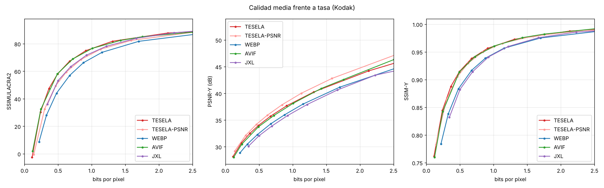
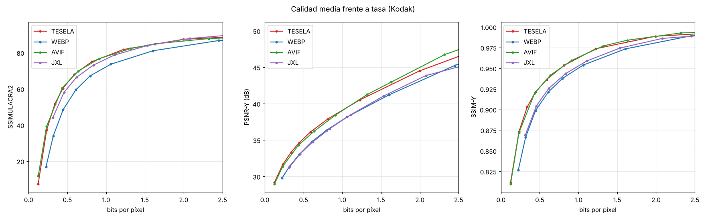
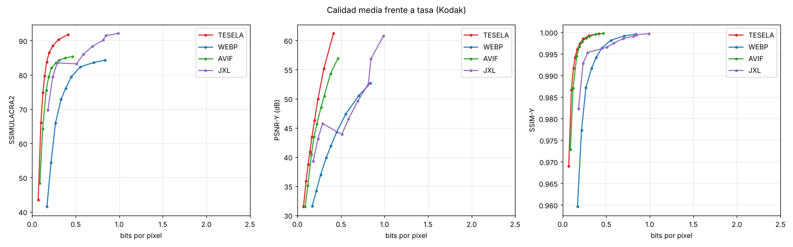
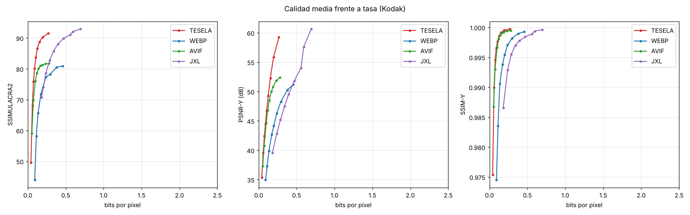

Documentación de Tesela
Tesela es un formato de imagen con pérdida (y sin pérdida) escrito desde cero en Rust. A igual calidad perceptual ocupa menos que WebP, AVIF y JPEG XL en fotos, capturas de pantalla e ilustraciones, y se usa en la web gracias a un módulo de WebAssembly.
Admite transparencia, un modo sin pérdida exacto y una vista previa progresiva. El codificador y el decodificador son la misma base de código en nativo y en el navegador, y producen exactamente los mismos bytes.
Estado. La versión 1 del formato está congelada, con especificación y archivos de conformidad. La versión 2 (particiones rectangulares y nuevas tablas de probabilidad) es la que escribe el codificador por defecto y aún puede cambiar. Es un proyecto independiente y experimental: ningún navegador lo soporta de forma nativa.
Primeros pasos
Sin instalar nada
El comparador codifica tus fotos con Tesela, WebP, AVIF, JPEG XL y JPEG dentro del navegador y te muestra tamaño, calidad y un visor para compararlas. Nada sale de tu ordenador.
Con la línea de comandos
Necesitas Rust. Acepta PNG y JPEG.
git clone https://github.com/davidpalmerojara/FVD.git tesela
cd tesela
cargo build --release
./target/release/tesela encode foto.jpg foto.tsl -q 85 # comprimir
./target/release/tesela decode foto.tsl foto_decodificada.png # descomprimir
./target/release/tesela roundtrip foto.jpg -q 85 # tamaño y métricas en JSONEn Windows (PowerShell) el ejecutable es .\target\release\tesela.exe y compilar requiere las
Build Tools de Visual Studio, que rustup ofrece instalar. En WSL basta con
sudo apt install build-essential.
El comparador en local
python3 web/serve.py # http://localhost:8000/compare/Con serve.py, Tesela codifica con varios hilos también en el navegador (ver Servidor).
Uso en la web
Hay dos formas de mostrar imágenes .tsl. Las dos usan el mismo módulo de WebAssembly
(tesela.wasm, ~630 KB, que se descarga una vez y queda en la caché).
Opción 1: HTML normal (recomendada)
<script src="/tesela-auto.js"></script> <!-- en el <head> -->
<img src="foto.tsl" alt="Descripción">Copia a la raíz de tu web tesela-auto.js, tesela-sw.js, tesela.wasm,
tesela.js, tesela-core.js y tesela-worker.js. Un Service Worker entrega
cada .tsl al navegador ya decodificado, así que funcionan <img>,
srcset, <picture>, los fondos CSS y «Guardar imagen como».
- Primera visita: el Service Worker aún no está activo; las imágenes se recargan solas en cuanto lo está.
- Requisitos: HTTPS (o
localhost). El Service Worker solo controla las páginas de su carpeta y subcarpetas: por eso va en la raíz. - Sin Service Worker: las
<img>se decodifican en la página; los fondos CSS no.
Opción 2: elemento <tesela-img>
<script type="module" src="tesela.js"></script>
<tesela-img src="foto.tsl" alt="Descripción" fallback="foto.jpg" loading="lazy"></tesela-img>Muestra la vista previa progresiva en cuanto llegan sus primeros bytes y, si algo falla, carga el
fallback. Atributos: src, alt, fallback y
loading="lazy". Ver la demo.
API de JavaScript
import { decode, encode, toObjectURL, decodePreview } from './tesela.js';
const imageData = await decode(bytes); // ArrayBuffer → ImageData
const tsl = await encode(imageData, { quality: 85 }); // ImageData → Uint8Array (.tsl)
const url = await toObjectURL(bytes); // URL para cualquier <img>
const preview = await decodePreview(firstBytes); // vista previa, si ya ha llegadoOpciones de encode: quality (0–100, por defecto 75), effort (1–9, por
defecto 4) y tune ('balanced', 'perceptual' o 'psnr').
Decodificar reparte las teselas de la imagen entre varios Web Workers.
Servidor
- Tipos MIME: sirve
.wasmcomoapplication/wasmy.jscomotext/javascript.web/serve.pyya lo hace (en algunos Windows el servidor de Python por defecto no). - Codificar con varios hilos en el navegador (opcional): la página debe estar aislada entre orígenes, con
Cross-Origin-Opener-Policy: same-originyCross-Origin-Embedder-Policy: require-corp. Entoncestesela-threads.jsusatesela-mt.wasm, con el mismo resultado byte a byte. Donde no se pueden poner cabeceras (GitHub Pages), el comparador las añade con un Service Worker.
Línea de comandos
tesela encode <entrada.png|jpg|gif|webp> <salida.tsl> [opciones] # GIF, APNG o WebP animado → animación
tesela decode <entrada.tsl> <salida.png|salida.gif|carpeta/> # animaciones: GIF o un PNG por fotograma
tesela compare <original.png> <distorsionada.png> # métricas en JSON
tesela roundtrip <entrada> [opciones de encode] # codifica, decodifica, verifica y mide| Opción | Efecto |
|---|---|
-q 1..100 | Calidad, en una escala parecida a la de JPEG: -q 85 se ve parecido a un JPEG de calidad 85. |
-e 1..9 | Esfuerzo de búsqueda (por defecto 4). Los niveles 1–3 son modos rápidos: -e 3 codifica unas 2,5 veces más rápido y ocupa un 3 % más; -e 1, unas 5 veces más rápido y un 8 % más. Incluso con -e 1 comprime como AVIF. |
--tune balanced|perceptual|psnr | Perfil de ajuste: equilibrado, calidad visual o fidelidad numérica. |
--lossless | Compresión sin pérdida, exacta bit a bit. |
--preview | Añade la vista previa progresiva (~300 bytes). |
--sin-metadatos | No guarda el perfil de color ni el EXIF. Por defecto se conservan, y la orientación EXIF se aplica a los píxeles. |
--screen / --no-screen | Fuerza o desactiva las herramientas de contenido sintético (por defecto se detecta solo). |
--threads N | Hilos del codificador (0 = todos). El resultado es idéntico con cualquier número. |
--tile N | Tamaño de las teselas en píxeles (múltiplo de 64, por defecto 1024). |
--v1 | Escribe la versión 1 (congelada) en lugar de la 2. |
--420 / --444 | Fuerza el submuestreo de croma. |
Cómo funciona
Tesela sigue la estructura clásica de los códecs modernos (predicción, transformada, cuantización y codificación entrópica), con decisiones tomadas por optimización tasa-distorsión: el codificador prueba alternativas y se queda con la que minimiza distorsión + λ·bits.
| Contenedor | Cabecera de 23 bytes y teselas independientes de 1024×1024, que se codifican y decodifican en paralelo. Dentro de cada tesela, el codificador decide los superbloques en frente de onda con varios hilos. |
| Color | YCbCr con croma 4:2:0, o 4:4:4 en calidades muy altas y en contenido sintético. |
| Partición | Superbloques de 64×64 en un quadtree hasta 4×4; cada nodo puede partirse también en dos mitades rectangulares. |
| Predicción | Planar, DC y 33 direcciones, con filtrado de referencias. La croma puede predecirse desde la luma (CCLM). |
| Transformada | DCT-II ortonormal de 4 a 64 puntos, también rectangular. |
| Cuantización | Matriz perceptual, cuantización adaptativa por zonas y RDOQ. |
| Entropía | Codificador aritmético binario con modelos adaptativos y probabilidades iniciales entrenadas por tipo de contenido y calidad. |
| Restauración | Filtro adaptativo por clases (estilo ALF) que el codificador estima por mínimos cuadrados. |
| Contenido sintético | Paleta, copia intra de bloques con índice hash y residuo sin transformada. |
| Extras | Canal alfa sin pérdida, modo sin pérdida, vista previa progresiva y metadatos: perfil de color ICC (por ejemplo, Display P3 de las fotos de móvil) y EXIF. |
| Animación | Cada fotograma guarda solo el rectángulo que cambia, y cada bloque puede predecirse del fotograma anterior con un vector de movimiento de cuarto de píxel o con el movimiento global del fotograma (paneos y zooms). Una terminal de 90 fotogramas ocupa 7 KB (en GIF, 242 KB; en WebP animado, 140 KB). |
El diario de experimentos del repositorio recoge qué se probó, cuánto aportó cada técnica y qué se descartó (por ejemplo, la cuantización dependiente de VVC no mejoró los resultados).
Resultados
Medimos el BD-rate frente a WebP: el porcentaje medio de bytes que ahorra cada formato a igual calidad (negativo = mejor), con SSIMULACRA2 como métrica principal de calidad perceptual. Todas las salidas se miden con el mismo programa, y las probabilidades de Tesela se entrenaron con imágenes distintas de las de evaluación.
| Conjunto | Tesela | AVIF | JPEG XL | WebP |
|---|---|---|---|---|
| Fotos · CLIC 2020, 41 profesionales de 2,2 MP | −35,9 % | −29,6 % | −22,2 % | 0 % |
| Fotos · Kodak, 24 de 768×512 | −30,7 % | −26,3 % | −12,1 % | 0 % |
| Fotos grandes · DIV2K, 50 de 2,7 MP | −35,1 % | −34,4 % | −20,3 % | 0 % |
| Capturas de pantalla · 9 | −60,1 % | −54,3 % | −36,0 % | 0 % |
| Ilustraciones · 6 | −61,8 % | −56,0 % | +9,5 % | 0 % |
Versiones: AVIF con libavif 1.4 y aom (speed 4, 4:4:4), JPEG XL con libjxl 0.12 (effort 7), WebP con libwebp 1.6 (método 6). En fotos grandes con calidad baja, Tesela y AVIF empatan; la ventaja está en calidad media y alta. Codificar con Tesela es más lento que con AVIF; decodificar, unas 3 veces más rápido en fotos.




Informes completos con todas las métricas (SSIMULACRA2, PSNR, SSIM) y datos crudos en
bench/results. El banco
de pruebas es reproducible: python3 bench/bench.py.
Especificación
- Especificación de la versión 1 (congelada): contenedor, sintaxis y reconstrucción con el detalle necesario para escribir otro decodificador.
- Borrador de la versión 2: diferencias con la v1.
- Archivos de conformidad: 14 archivos con el hash de su salida. Un decodificador es conforme con la v1 si los reproduce todos.
Cada archivo lleva su versión en la cabecera: un .tsl v1 seguirá abriéndose con cualquier versión
posterior del decodificador.
Preguntas frecuentes
- ¿Por qué otro formato de imagen?
- Para explorar cuánto se puede mejorar hoy partiendo de cero, con técnicas de los códecs de vídeo modernos y un banco de pruebas honesto. El resultado ocupa menos que los formatos actuales en todos los tipos de contenido probados.
- ¿Funciona en todos los navegadores?
- En todos los modernos (Chrome, Edge, Firefox, Safari, también en móvil), porque se decodifica con WebAssembly. No hay soporte nativo, así que conviene servir también un JPEG como respaldo.
- ¿Los visitantes pueden guardar las imágenes?
- Sí. Con
tesela-auto.jsel navegador recibe la imagen ya decodificada y «Guardar imagen como» funciona como siempre. Como cualquier imagen de la web, no hay protección contra copias. - ¿Por qué codifica más lento que AVIF?
- Porque prueba muchas más particiones y predicciones para ahorrar bytes. Usa todos los núcleos, y una imagen se
codifica una vez y se decodifica miles. Para cuando importa la velocidad están los modos rápidos: con
-e 3comprime más que AVIF y codifica 2,5 veces más rápido; con-e 1, empata con AVIF y es 5 veces más rápido. - ¿Y el modo sin pérdida?
- Es exacto bit a bit y mejora a PNG con claridad, pero en fotos ocupa más que WebP sin pérdida y que JPEG XL.
- ¿Qué limitaciones tiene?
- 8 bits por canal, sin HDR, y el alfa siempre es sin pérdida. En animación, Tesela gana a AVIF animado en
capturas, interfaces, movimiento de cámara y objetos en movimiento, pero en zooms largos AVIF ocupa un 9-18 % menos. El perfil de color se respeta con
tesela-auto.js; el elemento<tesela-img>pinta en sRGB. Es un proyecto experimental, sin una auditoría de patentes. - ¿Cómo se ha medido?
- Con curvas de calidad para cada formato en conjuntos públicos (Kodak, DIV2K) y propios (capturas e ilustraciones generadas), integradas con BD-rate. La metodología y los datos crudos están en el repositorio.
Descargas
- Código fuente: github.com/davidpalmerojara/FVD (Rust, sin dependencias de C).
- Librería web: la carpeta
web/del repositorio (tesela.wasm,tesela.jsy compañía).web/build.shla regenera. - Línea de comandos: se compila con
cargo build --releaseen Windows, macOS y Linux.